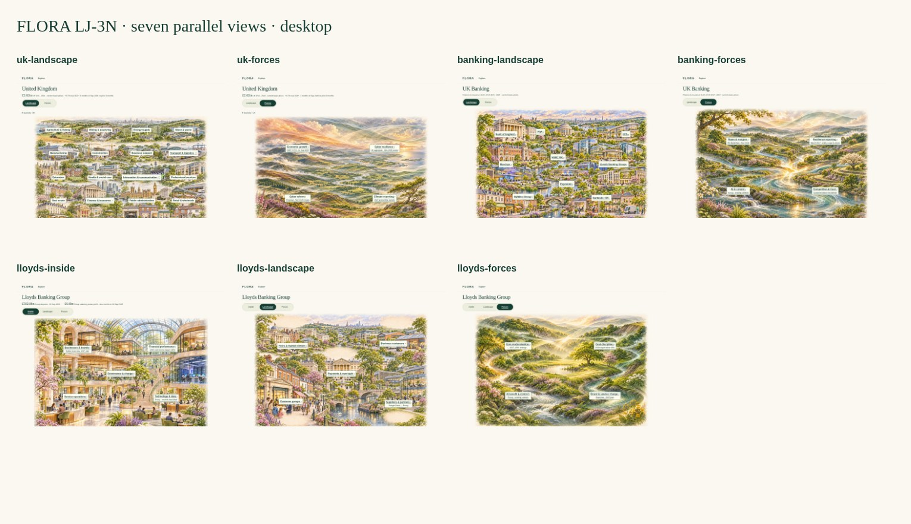

FLORA · Parallel Stream Navigation
UK → Banking → Lloyds · owner visual and architecture review pending
Open prototype · Download demo · Design review and evidence

UK → Banking → Lloyds · owner visual and architecture review pending
Open prototype · Download demo · Design review and evidence
